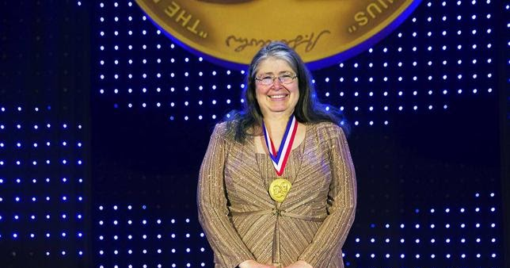
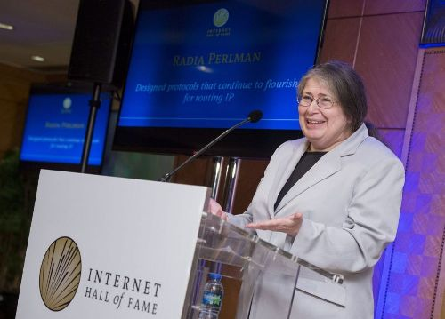
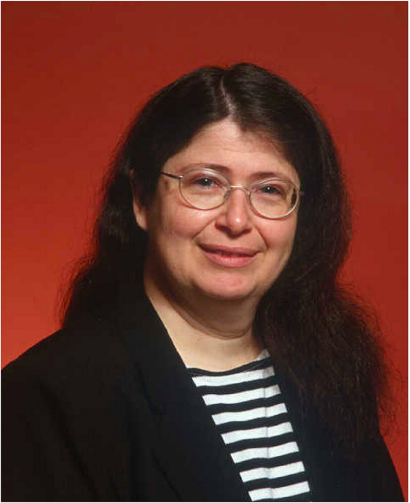
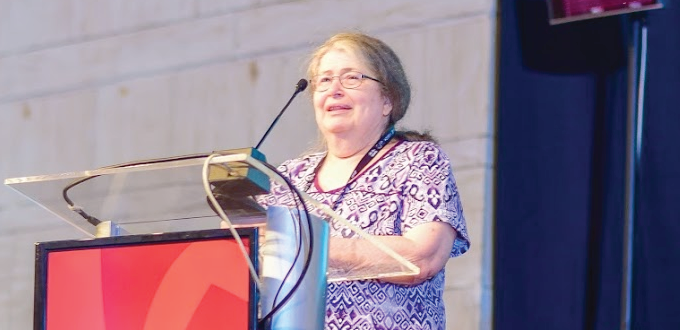

Carreira

Ela ficou famosa por sua invenção do Protocolo Spanning Tree (STP), que é fundamental para a operação de pontes de rede, enquanto trabalhava para a Digital Equipment Corporation.
Perlman é autora de um livro sobre redes e coautora de outro sobre segurança de rede. Ela detém mais de 100 patentes.
Ela foi bolsista na Sun Microsystems e ministrou cursos na Universidade de Washington, na Universidade de Harvard e no MIT, e foi palestrante em eventos em todo o mundo.
Perlman recebeu prêmios como o Lifetime Achievement Awards da Usenix e o Association for Computing Machinery’s Special Interest Group on Data Communication (SIGCOMM).
Educação

Como aluna de graduação do MIT, Perlman aprendeu programação em uma aula de física. Ela recebeu seu primeiro emprego remunerado em 1971 como programadora em tempo parcial para o LOGO Lab no (então) Laboratório de Inteligência Artificial do MIT, programando software de sistema como depuradores.
Trabalhando sob a supervisão de Seymour Papert, ela desenvolveu uma versão infantil da linguagem de robótica educativa LOGO, chamada TORTIS ("Sistema Interprete de Tartarugas Próprias da Criança").
Durante a pesquisa realizada entre 1974 e 1976, crianças pequenas - as mais novas com 3 anos e meio de idade, programaram um robô educacional LOGO chamado Tartaruga.
Perlman tem sido descrita como uma pioneira no ensino de programação de computadores para crianças pequenas.
Como formanda de matemática no MIT, ela precisava encontrar um orientador para sua tese e se juntou ao grupo MIT na BBN Technologies.
Lá, ela se envolveu na criação de protocolos de rede. Perlman obteve bacharelado e mestrado em matemática e um doutorado em Ciência da Computação do MIT em 1988.
Sua tese de doutorado no MIT abordou a questão do roteamento na presença de falhas de rede maliciosas.
Ao estudar no MIT no final dos anos 60, ela era uma entre as cerca de 50 alunas, em uma turma de aproximadamente 1.000 alunos.
Para começar, o MIT tinha apenas um dormitório feminino, limitando o número de mulheres que poderiam estudar.
Quando os dormitórios dos homens no MIT passaram a aceitar mulheres, Perlman saiu do dormitório feminino para um dormitório misto, onde se tornou a "mulher residente".
Mais tarde, ela disse que estava tão acostumada a desigualdade de gênero que se tornou normal.
Somente quando ela viu outras alunas entre uma multidão de homens, ela percebeu que "parecia estranho".
Vida pessoal

Perlman cresceu perto de Asbury Park, em Nova Jersey. Seus pais trabalhavam como engenheiros para o governo dos EUA.
Seu pai trabalhou no Radar e sua mãe era uma matemática de formação que trabalhava como programadora de computador.
Durante seus anos de escola, Perlman achava as matérias de matemática e ciência “fáceis e fascinantes”, mas não teve nenhum problema em alcançar notas altas em outras matérias também.
Ela gostava de tocar piano e trompa.
Enquanto sua mãe a ajudava com o dever de matemática, eles falavam principalmente sobre literatura e música.
Apesar de ser a melhor estudante de ciências e matemática em sua escola, foi somente quando fez uma aula de programação no ensino médio que Perlman começou a considerar uma carreira que envolvia computadores.
Ela era a única mulher na classe e depois refletiu: "Eu não era uma pessoa do tipo “mão na massa”.
Nunca me ocorreu desmembrar qualquer coisa. Presumi que ou eu seria eletrocutada ou quebraria alguma coisa".
Prêmios

National Inventors Hall of Fame (2016).
Internet Hall of Fame (2014).
SIGCOMM Award (2010).
Primeira colocação no Prêmio Anita Borg Institute Women of Vision Award para Inovação em 2005.
Silicon Valley Intellectual Property Law Association Inventor of the year (2003).
Honorary Doctorate, Royal Institute of Technology (28 de Junho de 2000).
Duas vezes nomeada como uma das 20 pessoas mais influentes da indústria pela revista Data Communications:
edição do 20o aniversário (15 de Janeiro de 1992) e edição do 25o aniversário (15 de Janeiro de 1997).
Perlman é a única pessoal nomeada nas duas edições.
Fellow of the Association for Computing Machinery, classe de 2016.